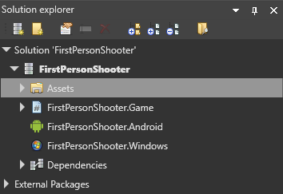
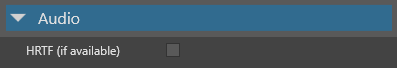

Head-related transfer function (HRTF) audio
Head-related transfer function (HRTF) is an advanced way of rendering audio so that sounds appear to come from a specific point in 3D space, synthesizing binaural audio. It provides more realistic audio than standard spatialized audio. For example, with HRTF, the player can hear whether a character is above or below them. This is particularly useful for VR applications, as it increases immersion.
Players don't need special hardware to use HRTF. However, the effect works much better with headphones than speakers.
This video demonstrates the effect of HRTF audio:
Note
For now, you can only use HRTF on Windows 10.
Enable HRTF
To use HRTF, first enable it globally in the Game Settings asset, then enable HRTF on the entities you want to use it with.
1. Enable HRTF globally
In Solution explorer (the bottom-left pane by default), select the Assets folder.

In the Asset View (the bottom pane by default), select the GameSettings asset.

In the Property Grid (the right-hand pane by default), under Audio settings, select HRTF support.

For more information about the Game Settings asset, see Game settings.
2. Enable HRTF on the entities
Select the entity with the audio emitter that contains the sound you want to enable for HRTF.
In the Property Grid (on the right by default), under Audio emitter, select Use HRTF.

Sounds emitted from this entity will use HRTF.
Note
The HRTF option applies to every sound emitted from this audio emitter.
For more information about audio emitters, including the properties you can change, see Audio emitters.